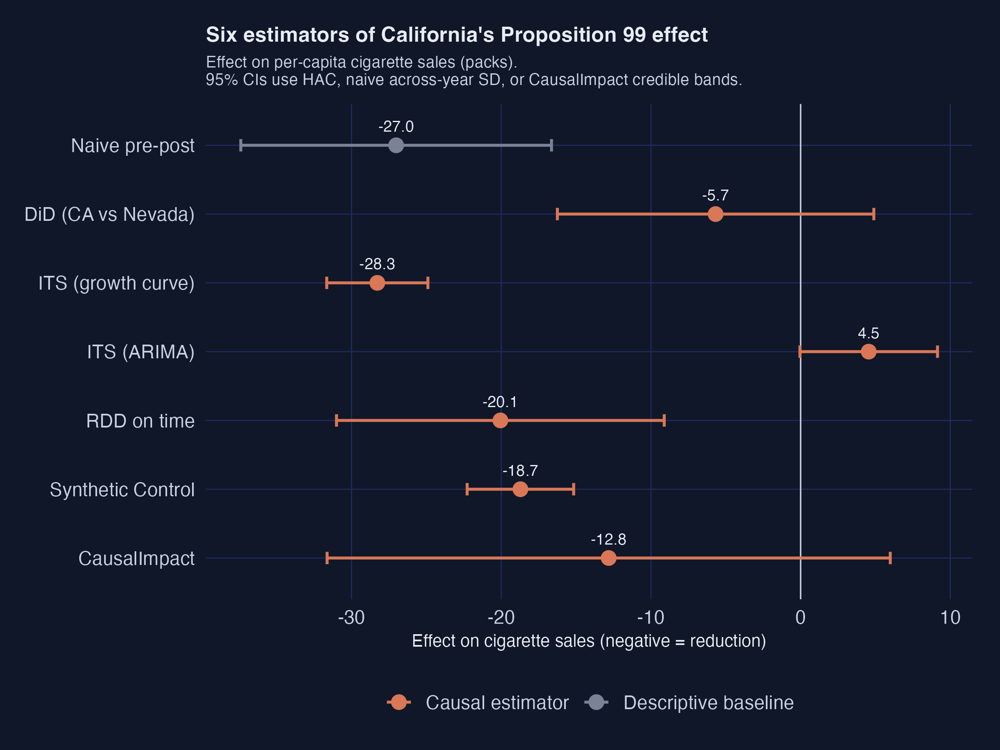
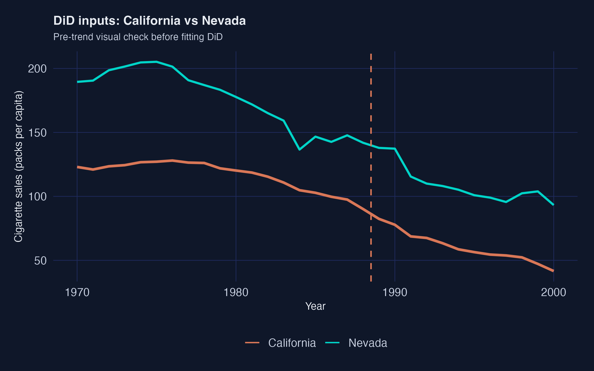
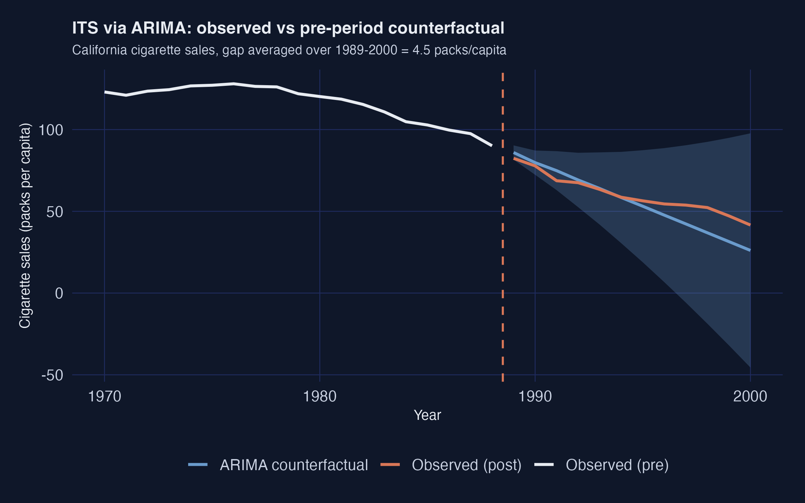
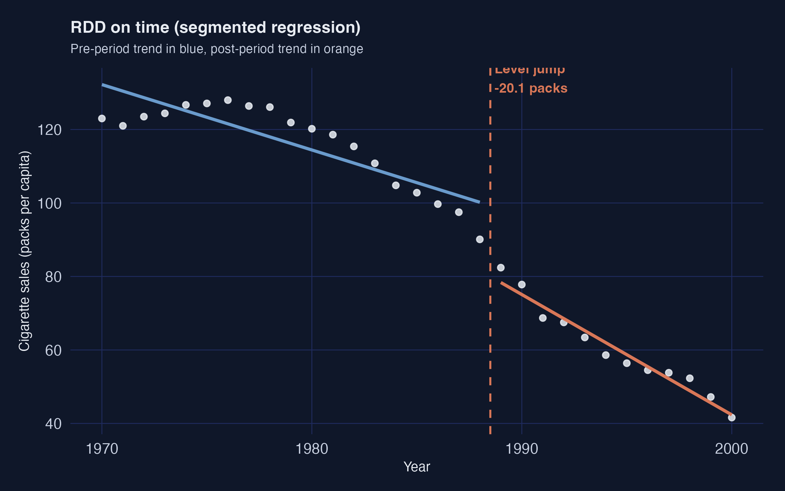
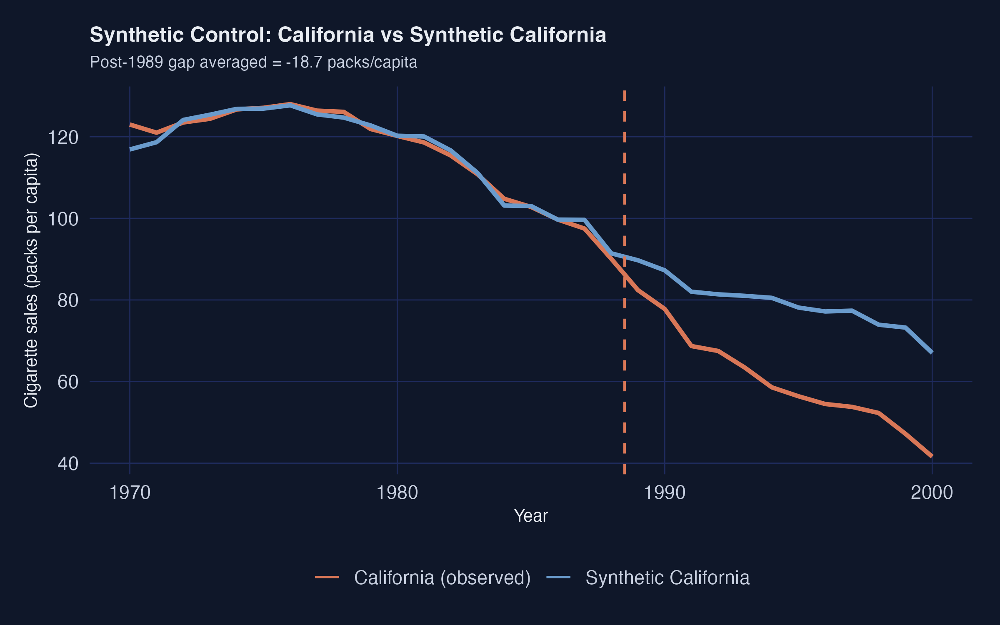
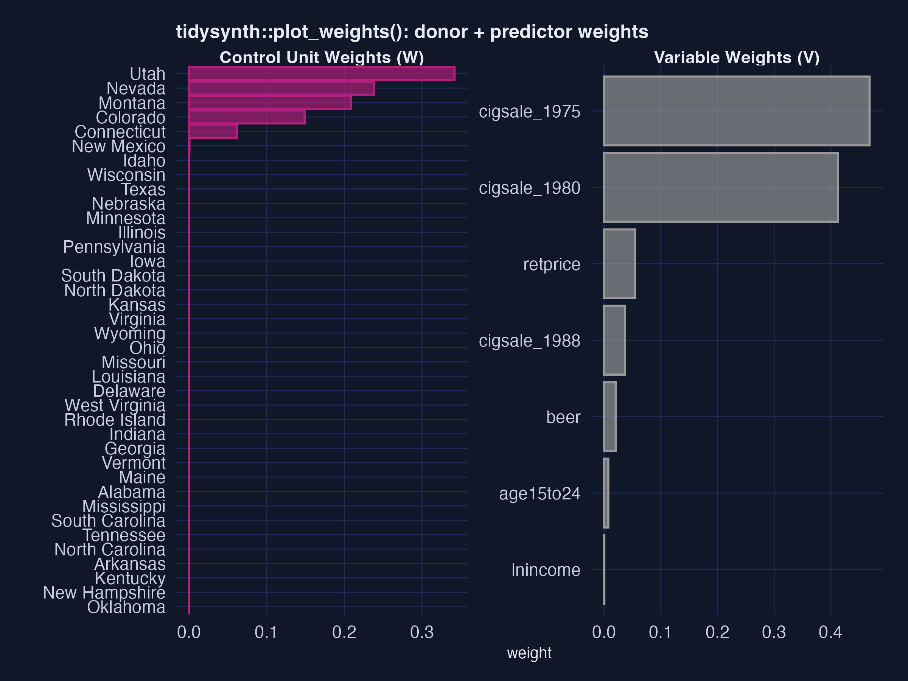
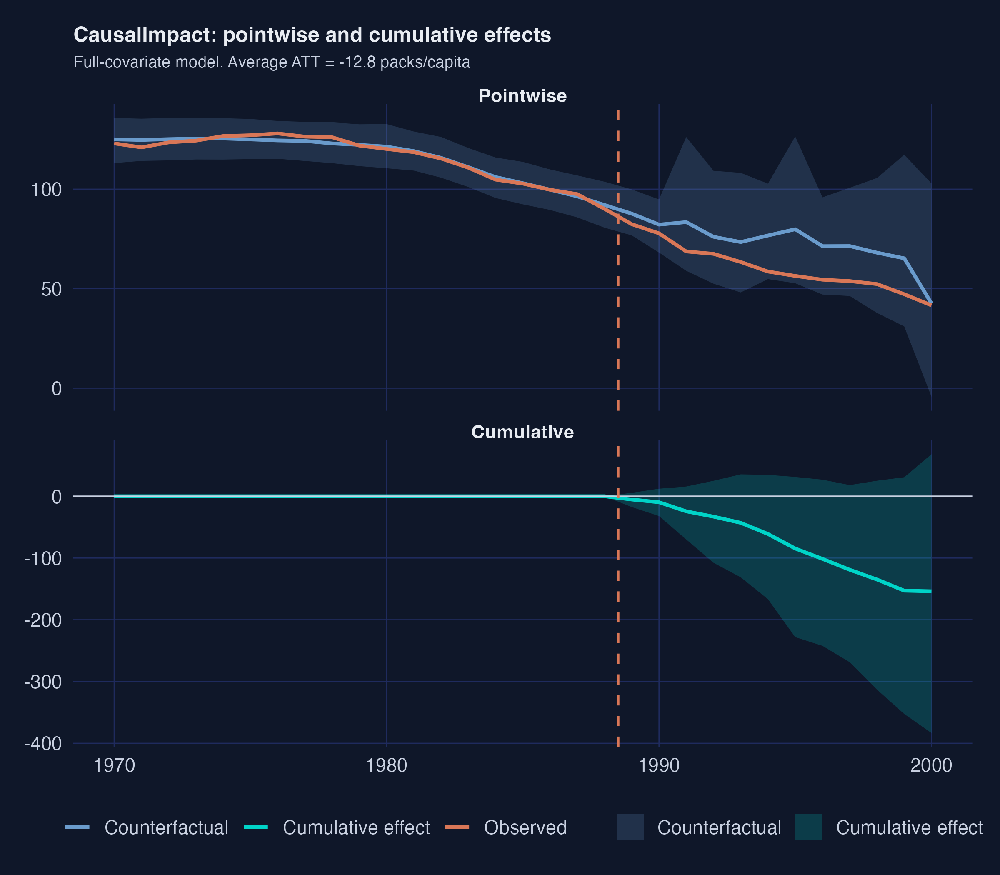

Comparative case studies of California’s Proposition 99, in R
Nagoya University (GSID)
June 11, 2026
Act I
In January 1989 California raised its cigarette tax by 25 cents. Per-capita sales fell from 116 packs (1970–1988) to 60 packs (1989–2000).
But the whole country was smoking less. How much of California’s drop did the policy actually cause?

Effect on per-capita cigarette sales, 95% intervals · naive, DiD, two ITS, RDD-on-time, synthetic control, CausalImpact. Dashed line = zero.
Act II
\[Y_{it} = D_{it}\, Y_{it}(1) + (1 - D_{it})\, Y_{it}(0)\]
Each state-year has two potential outcomes; we observe only one. For California after 1989 the missing one is \(Y_{it}(0)\) — sales without the tax.
Every estimator in this deck is a different way to impute that missing \(Y_{it}(0)\).
\[\text{ATT} = \mathbb{E}\big[Y_{it}(1) - Y_{it}(0) \,\big|\, D_{it} = 1\big]\]
Fixed for everyone
What each method changes
Six dashed arrows feed one counterfactual box; the gap to the observed series is the effect.
| Quantity | Estimate | HAC SE | \(p\) |
|---|---|---|---|
| Pre-period mean (1984–88) | 98.98 | — | — |
| Post-period shift | −27.02 | 5.30 | <0.001 |
Estimand: purely descriptive. Identifying assumption: California’s pre-level would have frozen — almost certainly false.

California (orange) vs Nevada (blue): both already falling before 1989, so the difference-in-differences contrast nearly vanishes.
\[\widehat{Y_{1t}(0)} = \hat\alpha + \hat\beta\, t, \qquad t > t^*\]
A linear fit on 1970–1988 (\(\hat\beta = -1.78\) packs/year, \(R^2 = 0.74\)) extended forward; the gap to observed averages −28.3 packs.
Assumption: the pre-trend has the right shape. No comparison unit — so it can’t separate policy from the secular decline.
+4.5
ITS via ARIMA(1,2,0) · the counterfactual bends below observed, implying the tax raised smoking

ARIMA(1,2,0) counterfactual (dashed, with 95% band) sits below the observed orange series throughout 1989–2000.

Piecewise pre/post linear fit (\(R^2 = 0.97\)): a clear level jump and a steeper slope at the 1989 threshold.

California (observed) vs synthetic California: near-perfect pre-1989 fit, then a gap opens and widens to ~30 packs by 2000.

Faceted plot_weights output: five donor states carry ~100% of the weight (left); two lagged outcomes dominate the V matrix (right).
tidysynth| Predictor | California | Synthetic | Donor avg |
|---|---|---|---|
| cigsale_1975 | 127.1 | 127.0 | 136.9 |
| cigsale_1980 | 120.2 | 120.2 | 138.1 |
| cigsale_1988 | 90.1 | 91.4 | 114.2 |
On 1988 sales, synthetic California (91.4) almost matches the real 90.1 — the donor average (114.2) is 24 packs off.
0.026
Placebo Fisher exact \(p\) · MSPE ratio 123.9, more than 2.5× the next-highest state

Top: observed California vs Bayesian counterfactual with a widening credible band. Bottom: cumulative effect reaching ~−150 packs by 2000.
Act III
| Method | Estimand | Estimate |
|---|---|---|
| Naive pre-post | descriptive | −27.0 |
| DiD vs Nevada | ATT | −5.7 |
| ITS growth | post-gap | −28.3 |
| ITS ARIMA | post-gap | +4.5 |
| RDD on time | level jump | −20.1 |
| Synthetic Control | ATT | −18.9 |
| CausalImpact | ATT | −12.8 |
Consensus cluster (RDD, SCM, CausalImpact): −13 to −20. Outliers: DiD collapses, ARIMA flips.
−18.9
ATT on California, 1989–2000 · Fisher exact \(p = 0.026\) · matches Abadie et al. (2010) within rounding
Objection. Synthetic control’s data-driven donor weighting manufactures the identification.
Response. It does not. The ATT is identified only if a convex donor combination tracks California’s no-policy path — a pre-trend assumption the placebo test stresses but cannot prove. Triangulating across six estimators discloses where each assumption breaks; it never relaxes them.